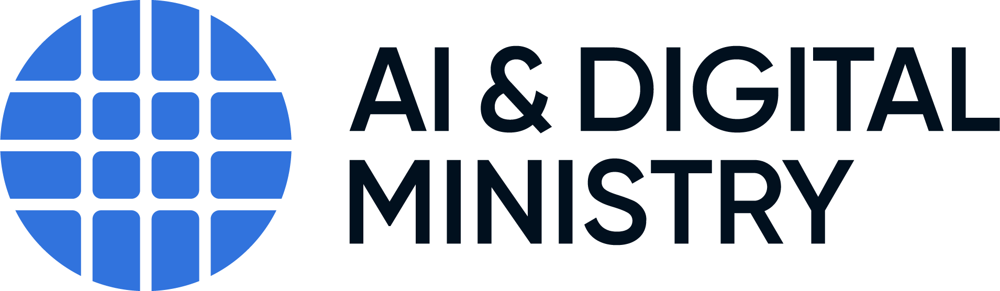
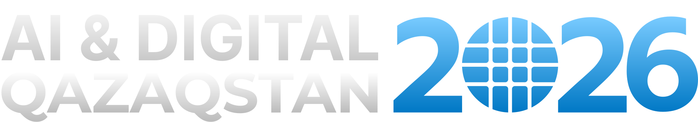

Диагностика
аудит · цифровой профиль · анализ архитектуры · gap‑analysis

КАЗАХСТАН · ЦИФРОВАЯ ТРАНСФОРМАЦИЯ РЕГИОНОВ
От единой методологии к системной цифровой трансформации регионов
Команда, которая формирует стандарты, координирует 20 регионов и создает основу нового центра «ИИ-регионы»
01 — НАПРАВЛЕНИЕ
КЛЮЧЕВОЙ ФУНКЦИОНАЛ НАПРАВЛЕНИЯ
02 — МЕТОДИКА
Обновление подходов в рамках нового Цифрового кодекса и Года цифровизации и искусственного интеллекта
01 Приведение в соответствие с Цифровым кодексом Республики Казахстан.
02 Внедрение концепции AI‑Native управления.
03 Единые подходы к цифровой трансформации регионов.
04 Международный опыт и предложения регионов.

03 — КООРДИНАЦИЯ
Региональные аналитические центры · Data Lake и Data Team
Smart Grid · цифровизация маслихатов
Региональные IT‑хабы · районные IT‑центры
БАС · мониторинг цен · доступность интернета в организациях образования
ЕДИНЫЙ КОНТУР
Еженедельные совещания · спринты · методологическая поддержка
04 — ПОРТАЛ
Онбординг новых государственных служащих, изучение методологии, поиск решений и обмен лучшими практиками между регионами.
05 — КОМПЕТЕНЦИИ
Программа «Цифровые навыки и искусственный интеллект в деятельности государственных служащих регионов»
06 — СЕРВИСНАЯ МОДЕЛЬ
После получения статуса нового центра «ИИ‑регионы» предлагается сформировать линейку коммерческих и консультационных услуг.
аудит · цифровой профиль · анализ архитектуры · gap‑analysis
стратегия · целевая архитектура · дорожная карта · KPI
проектное сопровождение · Planka · аналитические центры · ИИ‑сценарии
мониторинг · аналитика · рекомендации · обновление стратегии
Разовая экспертиза · Проектный контракт · Годовое сопровождение · Проектный офис под ключ · Аналитический продукт
07 — РАСШИРЕНИЕ МАНДАТА
ИИ · данные · аналитические дашборды · процессы · информационная безопасность · проектное управление · Smart City · телеком‑инфраструктура
Личные кабинеты · траектории · видеоуроки · тестирование · сертификацияМетодология без связи с проектным и финансовым планированием не дает достаточного механизма влияния на качество реализации.
Предлагается рассмотреть механизм экспертизы ИТ‑проектов и бюджетов МИО по аналогии с подходами к проектам ЦГО.Анализ мобильного, фиксированного и спутникового покрытия · выявление белых пятен · дорожные карты районов.
Аналитическая · методологическая · проектная · консультационная роль; не подменяет функции профильных органов.Новый центр «ИИ‑регионы» может стать единым партнером регионов по методологии, данным, компетенциям, инфраструктуре и внедрению искусственного интеллекта.
Единые стандарты.Практическое сопровождение.Масштабируемые цифровые решения.